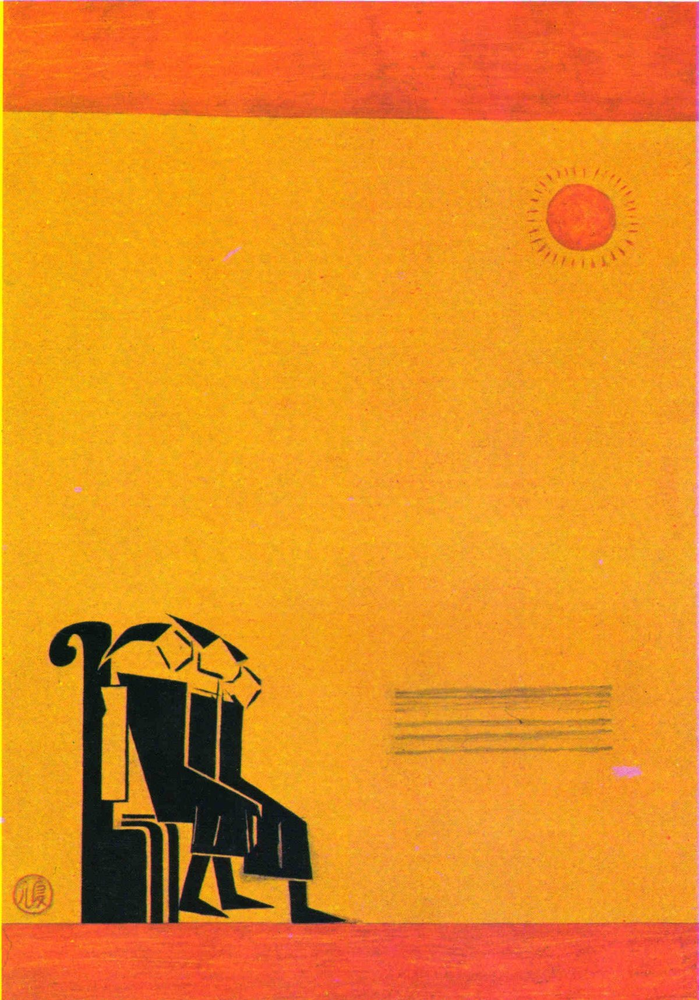
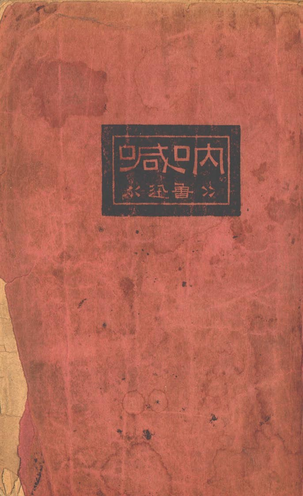
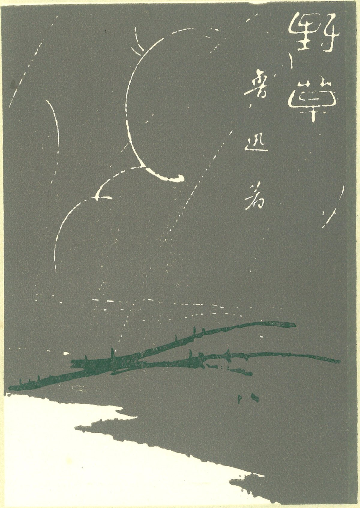
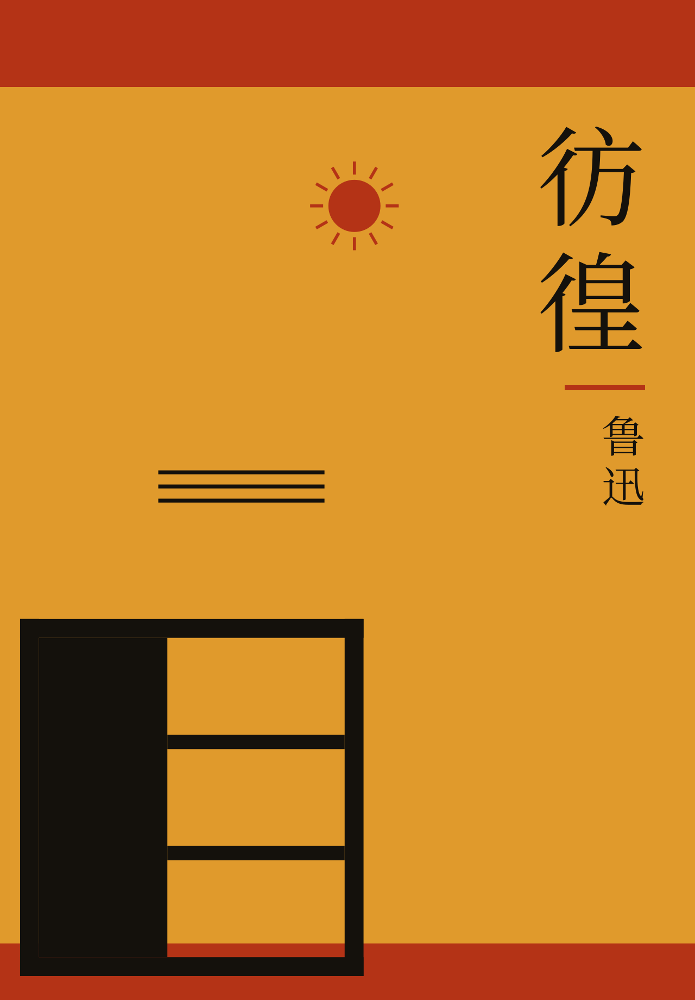
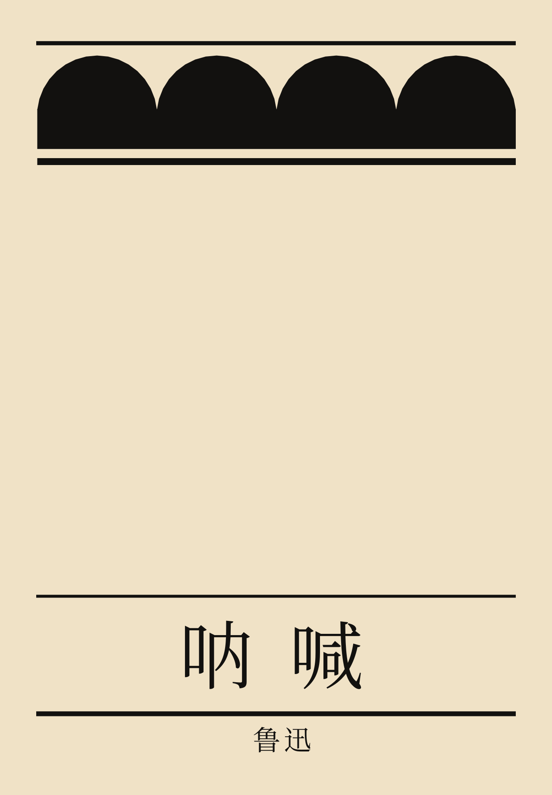
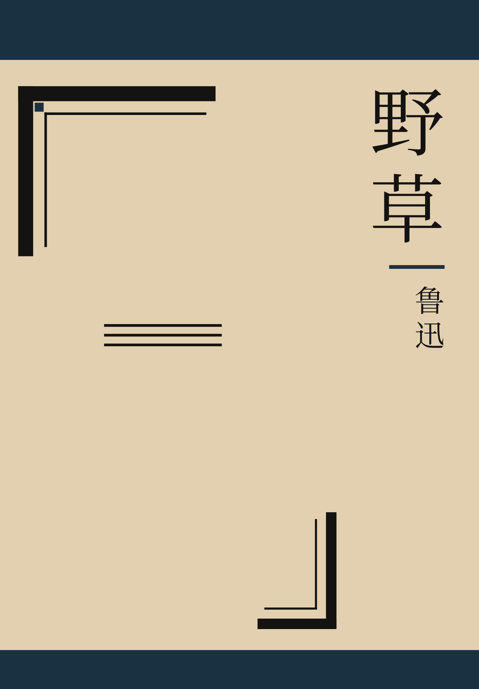
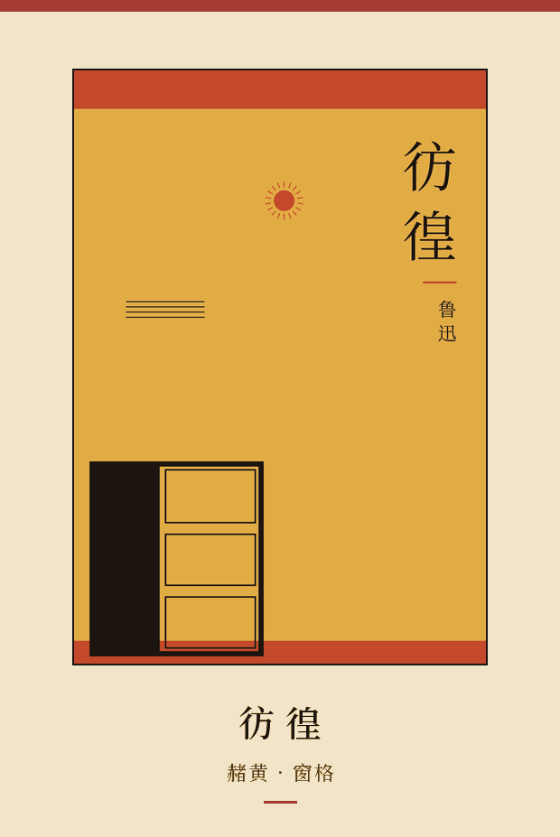

Lu Xun · Tao Yuanqing
民国书衣
luxun-cover-skill
这个页面先放三本原书的封面，再放命令 luxun-cover 画出的三张。命令按一本书的尺寸写 SVG：上下留书口，纸色偏暖，字用墨。纹样占一角，书名写在空出来的地方。仓库里另有一份给编程代理看的 SKILL.md。
The printed covers come first. The three drawn by luxun-cover follow. The command writes an SVG the size of a book: bands along the top and bottom, warm paper, ink for the characters. The ornament takes one corner, and the title sits in the space left over. SKILL.md, in the repo, is the note for a coding agent.
历史封面
三本原书的封面。画者、年份和扫描出处写在图下。
The printed covers. Painter, year, and the scan credit are under each picture.
-

彷徨 北新书局初版用过这张画。图：Wikimedia Commons, Panghuang bookcover.jpg。北京鲁迅博物馆编《北京鲁迅博物馆藏画选》，天津人民美术出版社，1986。公有领域（PD-art，作者 1929 年去世）。Beixin used this picture for the 1926 first edition. Public domain. -

呐喊 这一张是国家图书馆藏本，书目作 1930 年北新书局（上海）。深红地，一块黑，阴文书名。页面上有馆藏水印。1923 年初版是新潮社出的。图：Wikimedia Commons 第 1 页。公有领域（PD-China / PD-scan）。National Library of China copy, catalogued as Beixin, Shanghai, 1930. The 1923 first edition was issued by Xinchao She. Public domain. -

野草 云、远山、草。图：Wikimedia Commons，《野草》第一版封面.jpg。文件说明写来源为《野草》人民文学出版社 1973 年，许可公有领域（PD-China）。共享资源作者栏写的是周树人。Cloud, distant hills, grass. The Commons author field names Zhou Shuren. Public domain.


这条命令画出的
书名用的是上面三本。窗格、云头、角框是程序里的矩形和圆弧。SVG 的 <desc> 里留着 not a facsimile。
These use the three titles above. Lattice, cloud-head, and corner frame are rectangles and arcs in the program. The SVG <desc> keeps the words not a facsimile.
-

彷徨 -

呐喊 -

野草
画一张
From the repository root:
pip install -e .
luxun-cover --title 彷徨 --out panghuang.svg